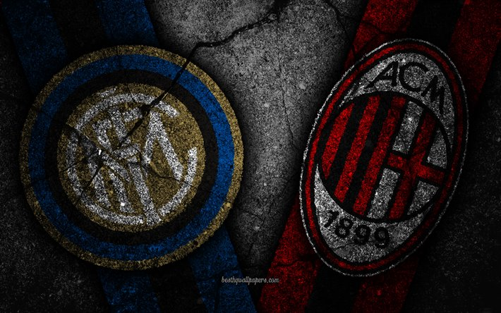

FC Barcelona VS Real Madrid
El gran clásico en España se trata de el partido que disputan entre el FC Barcelona y el Real Madrid, que siempre terminan con grandes disputas entre los jugadores, técnicos y aficionados. (Haciendo click en la imagen te llevará a un vídeo de los mejores momentos de los clásicos)
Los últimos resultados que tuvieron estos 2 equipos fueron de 1-3 en la ida, saliendo victorios el Real Madrid en el Camp Nou. Mientras que en la vuelta el resultado fue de 2-1 para el Real Madrid en el Alfredo Di Estéfano.
Manchester City VS Manchester United
Este gran duelo se disputa en la Premier League, en la que se enfrentan 2 de los grandes equipos del país, y los 2 de la misma ciudad, Mánchester. Este partido también suele terminar en duelos. (Haciendo click en la imagen puedes ver un resumen donde el Manchester City se proclama campeón de la premier después de 40 años haciéndole un gol en el último minuto al Manchester United)
Los últimos resultados de estos fueron de 0-0 en la ida, jugada en Old Trafford. La vuelta no quedó en empate, sino en 0-2 favorable a los rojos, jugandose en casa del Manchester City.
River Plate VS Boca Junior
Si hablamos de River VS Boca estamos hablando de probablemente el que es el partido con mayor rivalidad de todo el mundo. Este partido se juega en Argentina y tiene finales muy trágicos en muchas ocasiones. (Haciendo click en la imagen te llevará a un vídeo de los mejores momentos de los clásicos argentinos)
Los últimos resultados de estos fueron de 1-1, y no solo con empate a goles, también a rojas ya que ambos equipos recibieron una roja. En la vuelta el resultado se repite, pero al ser una liga dividida en 2 grupos estos fueron a penaltis, donde Boca se llevó la victoria en casa por 4-2.
Real Betis VS Sevilla
El gran derbi Sevillano es probablemente el mayor derbi de España, superando incluso el Real Madrid VS Atlético de Madrid. Este duelo tiene enfrentados a los Sevillanos bastantes años, desde que se fundó el Real Betis en 1907. (Haciendo click en la imagen te llevará a un vídeo de los mejores momentos de los derbis sevillanos)
Los últimos resultados que ambos equipos tuvieron fueron de 1-o favorable a los rojiblancos en su casa, el Sánchez Pizjuán. Mientras que la ida fue de 1-1 en el Benito Villamarín.
Inter de Milán VS AC Milán
Este gran derbi Italiano también nos deja grandes momentos bonitos y tristes al mundo del fútbol. (Haciendo click en la imagen te llevará a un vídeo de los mejores momentos de los derbis italianos en Milán)
Los últims resultados fueron de 1-2 en ida, saliendo victorioso el Milán en casa del Inter. En cambio, la vuelta fue de 0-3, donde el Inter se llevaba los 3 puntos de visitantes.